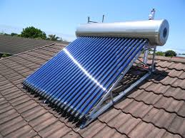
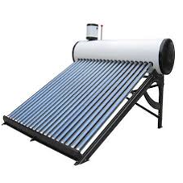
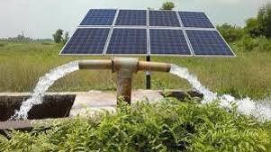
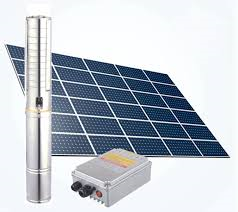
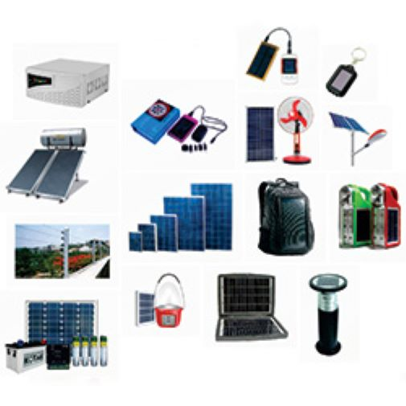

Solar Water Heater

Solar thermal systems use sunlight to heat water — for domestic use, swimming pools and more. A typical direct solar thermal system consists of collector, pipes and an insulated tank.
A typical 100 LPD (litre per day) system is sufficient to provide approximately 100 litres of hot water at an average temperature of 65°C every day on all sunny days. This helps save approximately 4 units of electricity daily (equivalent energy consumed by an electrical geyser) offering cost benefits of approximately Rs 4,000 per year. TPS solar water heaters are available in scalable multiples of 100. Large scale installations, for special applications involving heat transfer can also be engineered.
A typical 100 LPD (litre per day) system is sufficient to provide approximately 100 litres of hot water at an average temperature of 65°C every day on all sunny days. This helps save approximately 4 units of electricity daily (equivalent energy consumed by an electrical geyser) offering cost benefits of approximately Rs 4,000 per year. TPS solar water heaters are available in scalable multiples of 100. Large scale installations, for special applications involving heat transfer can also be engineered.
Features:
 • Daily hot water up to 80oC and better performance in winter and cloudy days.• No Scale formation and No pipe blockage will occur by using salt and hard water.
• Compressed PUF insulated storage tank to retain the Hot water for more than 48hrs.
• Inner Tank made of High grade stainless steel used in marine application.
• Non welded technology used for making inner tank to completely avoid inner tank leakages.
• Suitable for bore well water and hard water usage.
• Silicon rubber seal has no poison or smell encountered unlike cheaper and inferior models.
• The water is kept clean at all times. This product has a long life expectancy and capable of resisting higher temperatures.
• Extra Auxiliary tank is fitted instead of air vent, withstands high pressure of cold water also minimize mixing of Hot and Cold water.
• Completed 8 years of service with satisfied Customers Globally.
• High transmissivity triple layered clog and choke free collector tubes.
• Save up to 36,000 per year**
• Approximate Area Required for Installation: Length 10 Feet X Width 6 Feet
Solar Water Pumps
Solar water pumps are stand-alone systems powered by solar a photovoltaic module, that delivers power to Water Pumps all through day time. During the day light, solar photovoltaic modules generate DC power which is fed to the DC Centrifugal surface pumps for lifting water from open wells or reservoirs or for lift irrigation with 10 to 30 Metre water head. This ensures very high overall water delivery when the pump is operated throughout the day. The whole system is simple and robust and is absolutely maintenance free for years. And best of all it can be operated everywhere no matter how far you are from the grid because sun is available almost everywhere free of cost!
Day or Night water pumping method uses a battery for energy storage for easy pump starting and so water can be pumped at any time. This method has some significant advantages. Water can be pumped during the day or night, in any weather. This can be critical for such applications as diverting flood waters, or providing potable water during emergencies. The battery adds some cost, but since the PV array does not have to be large enough to start the pump, the system cost can actually be lower.
An MPPT solar charge controller optimizes the energy harvest from the array and the inverter converts the DC to solid AC power for almost any pump. The pumps can be any size and single phase or 3 phase. Designing this system starts with selecting the pump to meet the water needs. The inverter and battery are sized to provide enough power to drive the pump. The PV array must simply recharge the battery in the daytime.

An MPPT solar charge controller optimizes the energy harvest from the array and the inverter converts the DC to solid AC power for almost any pump. The pumps can be any size and single phase or 3 phase. Designing this system starts with selecting the pump to meet the water needs. The inverter and battery are sized to provide enough power to drive the pump. The PV array must simply recharge the battery in the daytime.
AC Water Pumps: For high amounts of water, a large AC pump is usually required. These pumps require well regulated 3 phase AC voltage and current. By using an AC variable speed controller called a Variable Frequency Drive (VFD), the pump motor will have the proper voltage and current. The trick is to supply DC from the PV array directly into the DC bus inside the VFD. The normal AC input is not used.
As the sun rises and PV voltage and current increase, some VFD products will accept the input and when the power is high enough, it will start the pump. The PV array must be large enough to provide enough power to start the pump with including the head of water. The size of the PV array required for this method can be very expensive. This method will only pump when there is plenty of sunshine, but large pumps can be driven by large PV arrays.
As the sun rises and PV voltage and current increase, some VFD products will accept the input and when the power is high enough, it will start the pump. The PV array must be large enough to provide enough power to start the pump with including the head of water. The size of the PV array required for this method can be very expensive. This method will only pump when there is plenty of sunshine, but large pumps can be driven by large PV arrays.
Features:
• There is an automatic protection against low voltage/high voltage and dry run in the inverter.• It is an energy efficient pump.
• Maintenance cost is also quite less.
 • It is easy to install.
• It saves electricity and fuel.
Application
• Prove helpful in supplying water to the rural community.• Provide water the dwellings and farming regions.
• Fulfill Livestock watering requirements.
• Meet the water requirements in Micro-irrigation.
• Fish culture ponds.
Others Products:
• Solar inverter• Home lighting
• Lamps
• Fans
• Motors